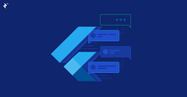
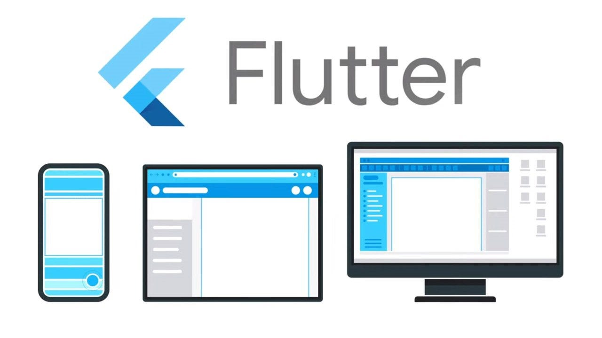

¿Que es Flutter?
Flutter es un SDK de código abierto de Google para crear aplicaciones móviles nativas tanto para iOS como para Android a partir de una única base de código. Esto significa que puedes desarrollar una sola aplicación y desplegarla en ambas plataformas, ahorrando tiempo y recursos.

Inscribirse
¿Por que aprender Flutter?
Desarrollo rápido:
Flutter ofrece un proceso de desarrollo ágil gracias a su sistema de hot reload, que permite ver los cambios en la aplicación en tiempo real sin necesidad de recompilar todo el proyecto.
UI personalizada:
Flutter te brinda una gran flexibilidad para crear interfaces de usuario altamente personalizadas y atractivas, con una amplia gama de widgets prediseñados y la posibilidad de crear los tuyos propios.
Rendimiento nativo
Las aplicaciones desarrolladas con Flutter ofrecen un rendimiento similar al de las aplicaciones nativas, gracias a que se compilan directamente a código máquina.
Gran comunidad
Flutter cuenta con una comunidad en constante crecimiento, lo que significa que encontrarás una gran cantidad de recursos, tutoriales y soporte en línea.
¿Qué aprenderás en un curso de Flutter?
Widgets: Los bloques fundamentales de construcción en Flutter. Todo en Flutter es un widget, desde un botón hasta una pantalla completa.
Árbol de widgets: Los widgets se organizan en un árbol jerárquico, donde cada widget es un nodo en el árbol.
Estado: La forma en que Flutter gestiona los cambios en la interfaz de usuario. Los widgets pueden ser Stateful (con estado) o Stateless (sin estado).
Navegación: Flutter proporciona herramientas para navegar entre diferentes pantallas de tu aplicación.
Layout: Flutter ofrece una variedad de layouts para organizar tus widgets en la pantalla de forma flexible.
¿Cuál es el futuro de Flutter?
Flutter es una tecnología en constante evolución, y se espera que su popularidad siga creciendo en los próximos años. Google está invirtiendo fuertemente en Flutter, y la comunidad de desarrolladores también está creciendo rápidamente. Esto significa que Flutter es una excelente opción para aquellos que desean desarrollar aplicaciones móviles de alta calidad de manera eficiente
